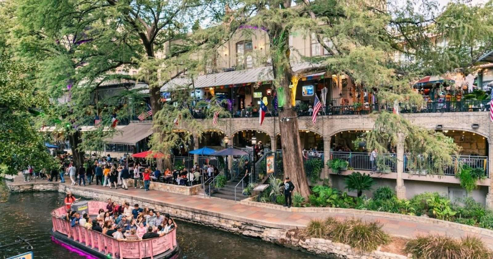

The photos
On the patio
Plates, the balcony and the river.




Come hungry
Call ahead or walk in. Steaks, brisket and a seat on the river.

The photos
Plates, the balcony and the river.

Call ahead or walk in. Steaks, brisket and a seat on the river.